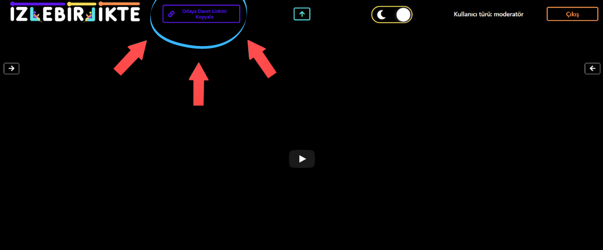
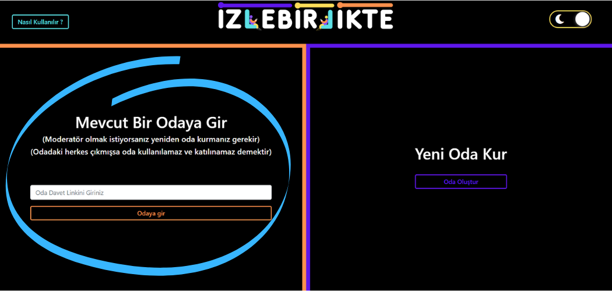
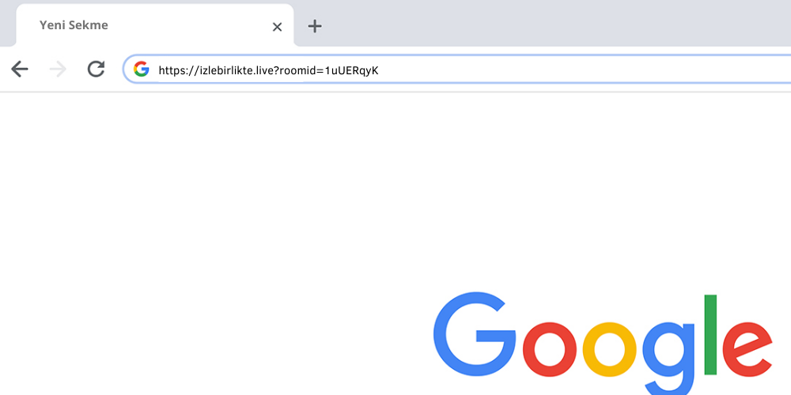
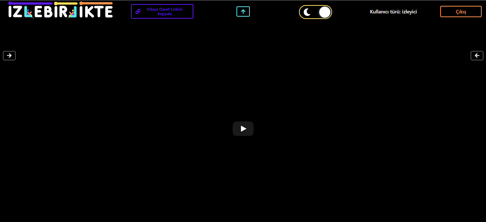
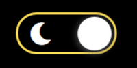
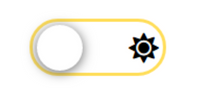
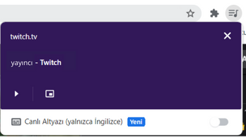
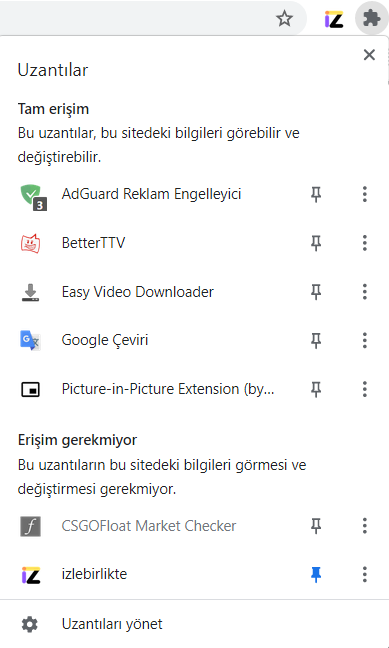
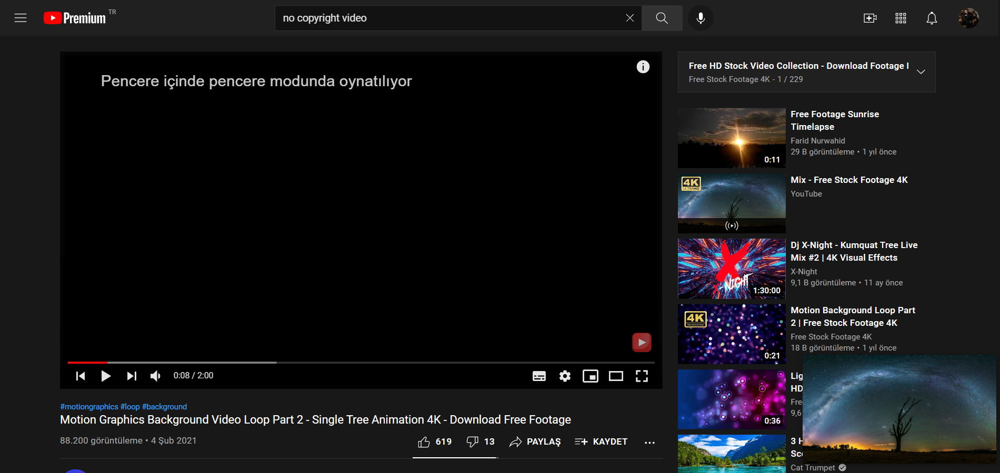

İzleyici iseniz
Moderatör olan kişi size direkt olarak şuradan linki paylaşabilir

Davet Linkini İster Sitedeki Odaya Girme Alanına

İsterseniz De Direkt Olarak Linke Tıklayarak Odaya Gidebilirsiniz

Karşınızda şu şekilde bir ekran gelecektir.

Tema modunu istediğiniz şekilde değiştirebilirsiniz

Birlikte izlediğiniz youtube videosu dışında bir canlı yayını da takip etmek istiyorsanız:
- Öncelikle şu eklentiyi indirin
- Sonrasında izlemek istediğiniz yayının olduğu sayfadayken eklentinin üzerine tıklayın
Picture-in-Picture Extension (by Google)
- Eğer Chrome kullanmıyorsanız Opera'daki bu eklentiyi indirip oradan chrome'daki gibi eklenti kurabilirsiniz
- Eğer Chrome kullanıyorsanız ayrıca picture in picture eklentisi yüklemeden de picture in picture moduna alabilirsiniz



Örnek olarak tıkladığınızda ekrandaki video/yayın yukarıdaki şekilde gözükmesi gerekiyor